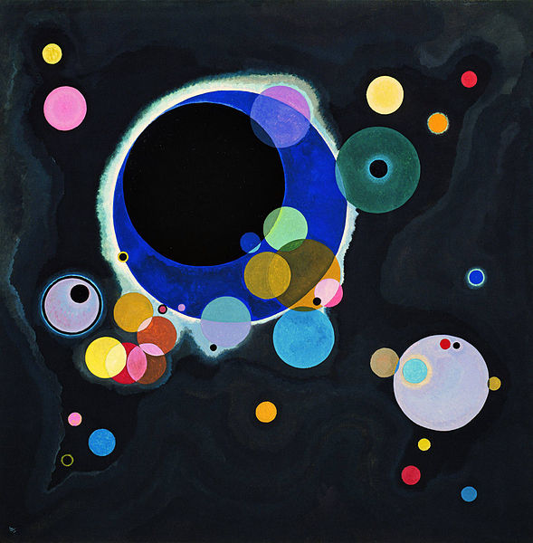

MACLASSE.COM

Les formes géométriques sont des figures de la vie de tous les jours, fabriquée avec des lignes fermées.
Voici quelques exemples :
C'est une pyramide avec une base triangulaire, avec quatre faces collées les unes aux autres.
Des créations avec un effet goutte d'eau.
Avec des formes et une tailles différentes.

Afin de préparer au mieux les élèves à la géométrie, l'art est le meilleur moyen. Nous découvrons ici une nouvelle forme qui est le cercle, vue par deux artistes :
Nous pourrons remarquer sur ces oeuvres les cercles de toutes tailles qui tournent autour d'un grand cercle.

Une oeuvre coloré et dynamqiue, du a la superposition des cercles et aux couleurs vives.


Mentions légales / Qui sommes-nous ? / Plan du site
Nos matières : français - mathématiques - histoire - sciences - arts visuels - geographie